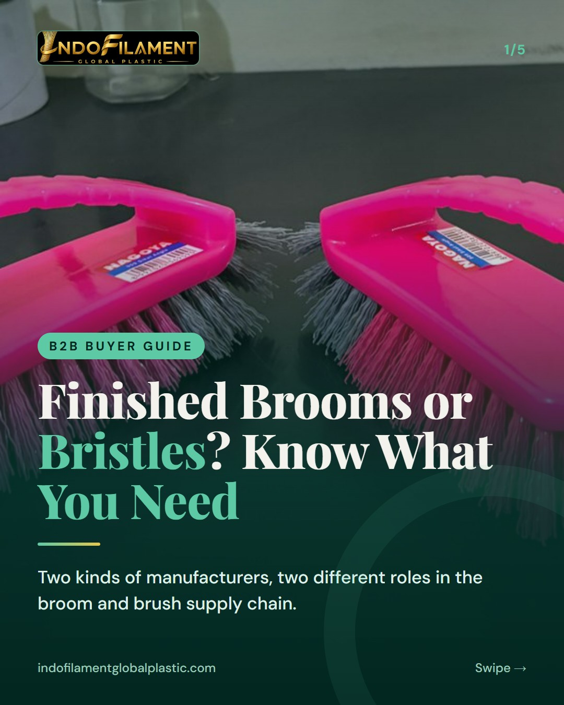
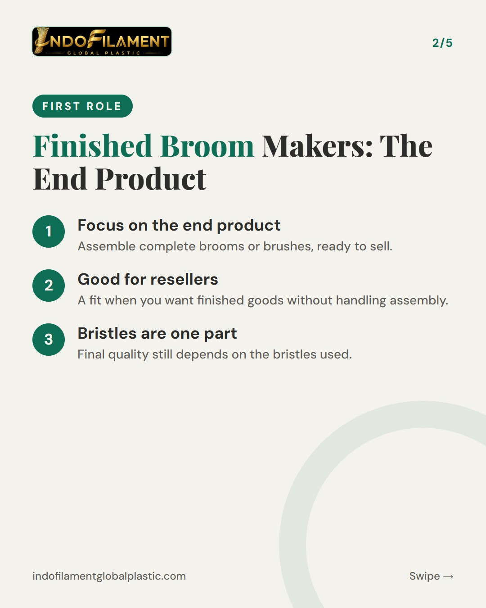
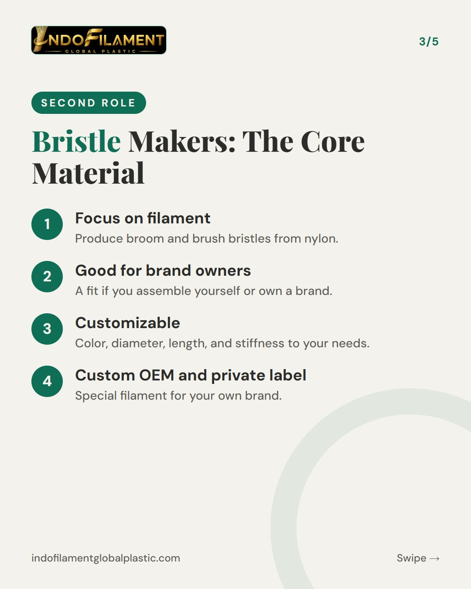
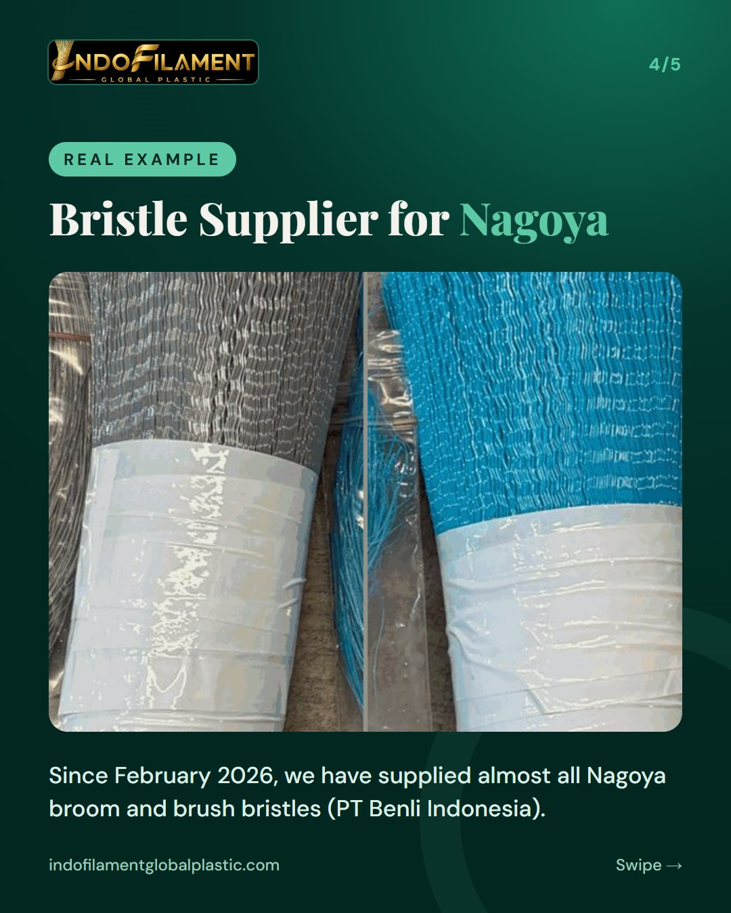
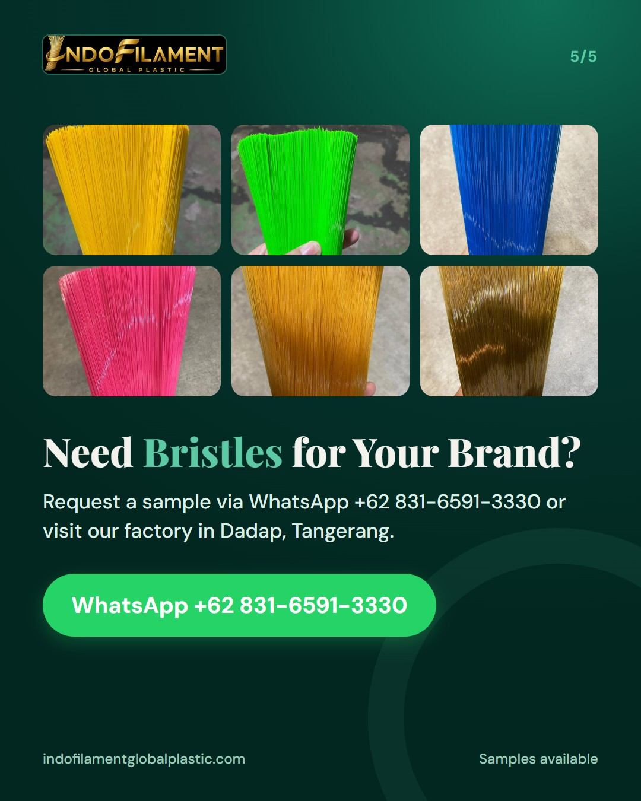

Finished broom maker vs. broom bristle maker: which one do you need





Want to make brooms or brushes under your own brand, but not sure which manufacturer to start with? 🤔 There are two different roles in the supply chain: 🧹 Finished broom manufacturer: assembles the final product, ready to sell to consumers. 🧵 Broom bristle manufacturer: makes nylon filament as the core material, for you to assemble yourself or fit to your brand. PT Indofilament Global Plastic is on the second side. At our factory in Tangerang, we produce broom and brush bristles with modern filament machines, up to 5 tons per day, from eco-friendly recycled plastic raw materials. Color, diameter, length, and stiffness can be customized, including custom OEM and private label. Since February 2026, we have also supplied almost all of the bristles for Nagoya brooms and brushes, a brand of PT Benli Indonesia. Request a sample via WhatsApp +62 831-6591-3330 or DM us. Our factory is also open for visits. #broomfilament #brushfilament #nylonfilament #broommanufacturer #brushmanufacturer #madeinindonesia #privatelabel #customOEM #bristlesupplier #recycledmaterials